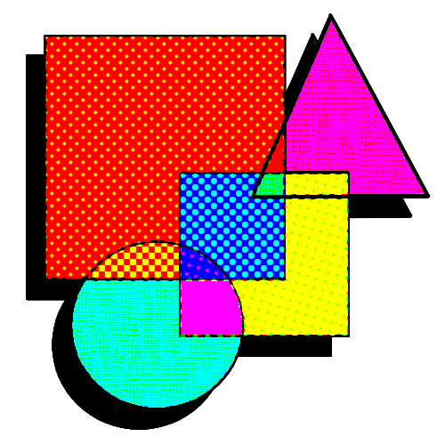

ALIAS: Moru
Sistema operativo optimizado. La creatividad fluye a través de los canales de HYPERZONE
Supervisión de materia

User Profile: MoruSistema operativo optimizado. La creatividad fluye a través de los canales de HYPERZONE